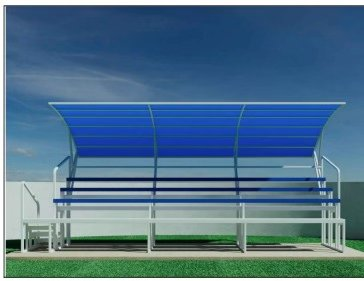

Gradas INIFED: qué normativa cumplen en México
Si vas a comprar gradas para una escuela, municipio u obra pública en México, tu proveedor debe cumplir con un conjunto específico de normas técnicas. Aquí está la lista completa.

- 8 normativas obligatorias: IBC 2018, CFE Sismo 2015, CFE Viento 2020, NTC Acero/Concreto/Cimentaciones, NTC Criterios y Acciones 2017 y AISC 360/16.
- Carga viva categoría "e": 450 kg/m² — la más alta de NTC, reservada para gradas y zonas de reunión.
- Memoria firmada por ingeniero civil con cédula profesional + planos EST-101 + verificación ETABS.
- Solo el modelo Grada 50P Policarbonato 6mm de Sportmaster cumple INIFED.
Una grada INIFED no es simplemente una grada "bonita" o "resistente". Es una estructura que cumple con los lineamientos del Instituto Nacional de la Infraestructura Física Educativa, el organismo federal mexicano que certifica la calidad técnica, seguridad y funcionalidad de espacios educativos.
Si eres director de escuela, funcionario de municipio, ingeniero de obra o administrador de club, y vas a comprar gradas deportivas, esta guía te ahorra reuniones y presupuestos mal orientados.
¿Qué es INIFED exactamente?
El Instituto Nacional de la Infraestructura Física Educativa (INIFED) es el organismo que establece lineamientos técnicos para edificaciones destinadas al servicio educativo en México. Su mandato incluye aulas, laboratorios, áreas recreativas y — para lo que nos interesa — canchas deportivas, gradas, porterías y cualquier infraestructura de actividad física escolar.
Cuando se dice que un producto "cumple INIFED", significa que fue diseñado, calculado y construido bajo los parámetros técnicos que el Instituto exige. Esto importa porque:
- Es requisito para obras con fondos públicos federales (SEP, "La Escuela es Nuestra", FONE)
- Es requisito para auditorías de obras ejecutadas por municipios y estados
- Protege legalmente al adquirente frente a incidentes
- Garantiza que la estructura tiene respaldo ingenieril documentado

Las 8 normativas que debe cumplir una grada INIFED
Una grada deportiva INIFED no cumple una sola norma — cumple un cuerpo normativo completo. Aquí el desglose:
1. International Building Code 2018 (IBC)
Código internacional de referencia para edificaciones. Aplica a cargas, diseño general y detalles constructivos. En México se usa como complemento a las NTC.
2. CFE — Diseño por Sismo 2015
Manual de la Comisión Federal de Electricidad para análisis sísmico. Define espectros de diseño, factores de comportamiento sísmico (Q) y de sobrerresistencia (R). Para gradas deportivas se aplica con el software PRODISIS v4.1 en zona sísmica del sitio. Para la grada INIFED 50 personas de Sportmaster se usaron factores Q=1.25 y R=2 con combinaciones bidireccionales 100/30%.
3. CFE — Diseño por Viento 2020
Manual de Obras Civiles CFE 2020 para cargas de viento. Define velocidad regional, presión dinámica y factores topográficos. Nuestra grada INIFED se calcula con velocidad regional de 129 km/h y presión dinámica de base 48.01 kg/m².
4. NTC Criterios y Acciones 2017
Normas Técnicas Complementarias del Reglamento de Construcciones de la Ciudad de México. Define las cargas vivas y combinaciones de diseño. Para gradas se aplica la categoría "e": 450 kg/m² — la más alta, reservada para estadios y lugares de reunión sin asientos individuales. Además incluye carga por sismo de 350 kg/m².
5. NTC Estructuras de Acero 2020
Norma para diseño y verificación de elementos metálicos. Aplica a la estructura de acero que forma las columnas, vigas y conexiones de la grada. Requiere verificación por compresión, esbeltez y eficiencia de trabajo. El expediente del modelo INIFED 50 personas incluye estos cálculos firmados por el ingeniero responsable.
6. NTC Estructuras de Concreto 2021
Aplica a los dados de cimentación. Para la grada INIFED 50 se usan dados D-1 con concreto f'c = 250 kg/cm² y acero de refuerzo fy = 4,200 kg/cm², verificados por momento flexionante, carga axial, esbeltez y estribos.
7. NTC Cimentaciones 2017
Define criterios de diseño de cimentación según tipo de suelo. El proyecto debe incluir estudio o referencia a las condiciones del sitio y verificación de capacidad portante.
8. AISC 360/16
Norma norteamericana del American Institute of Steel Construction, referenciada por las NTC. Complementa la verificación de elementos metálicos con criterios internacionales.
Modelo INIFED 50P con memoria firmada, planos EST-101 y verificación ETABS. Sin compromiso.
Qué documentos debes exigir a tu proveedor
Cuando cotices gradas INIFED planos, el expediente técnico debe contener mínimo:
- Memoria de cálculo estructural firmada por ingeniero civil con cédula profesional y preferentemente con maestría en ingeniería estructural
- Planos estructurales (tipo EST-101) con planta general, secciones, detalles de conexión y cuadro de datos del proyecto
- Reporte de verificación en software profesional (ETABS, SAP2000) con relación demanda/capacidad por elemento
- Ficha técnica de materiales (PTR, policarbonato, pintura, anticorrosivo)
- Certificados de cumplimiento INIFED, NTC y demás normas aplicables

Preguntas frecuentes
¿Toda grada metálica cumple INIFED?
No. Una grada puede ser metálica, resistente y barata, y aun así no cumplir INIFED porque carece de memoria de cálculo firmada, análisis sísmico documentado o los factores de carga correctos. Pedir "grada metálica" y "grada INIFED" son dos compras distintas.
¿Puedo certificar después una grada que ya tengo?
Técnicamente sí, contratando a un ingeniero estructurista para levantar memoria post-construcción. En la práctica es más caro que haberlo hecho correctamente desde inicio, porque a veces el producto instalado no pasa la verificación y hay que reforzar.
Conclusión
Comprar una grada deportiva INIFED es comprar ingeniería documentada, no solo acero pintado. Si estás en una obra con fondos públicos, si quieres protección legal, o simplemente quieres que tu grada aguante el terremoto o la tormenta que venga — pide planos, pide memoria, pide cédula del ingeniero que firmó.
¿Necesitas una grada INIFED para tu escuela o municipio?
Sportmaster entrega su modelo INIFED de 50 espectadores con memoria de cálculo firmada, planos EST-101 y cumplimiento NTC completo. Fabricación 15 días, instalación 5 días.